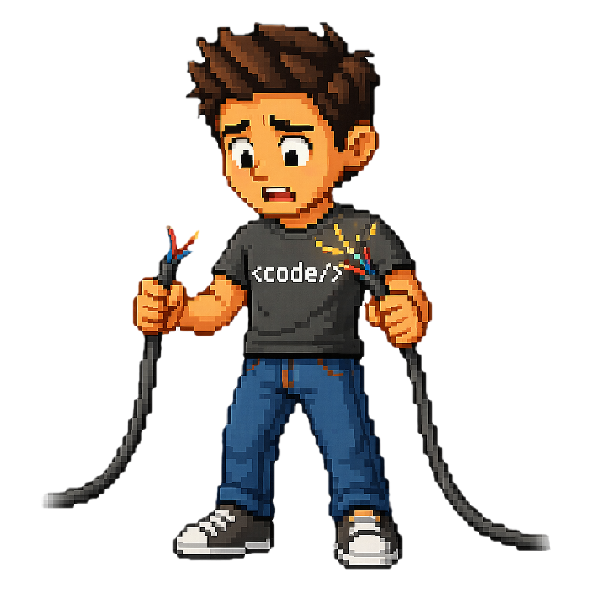

Connection lost
The route cable got severed mid-transfer. No cartridge loaded at this address.

booting recovery shell…
Press Esc or tap home to respawn.
The route cable got severed mid-transfer. No cartridge loaded at this address.

booting recovery shell…
Press Esc or tap home to respawn.